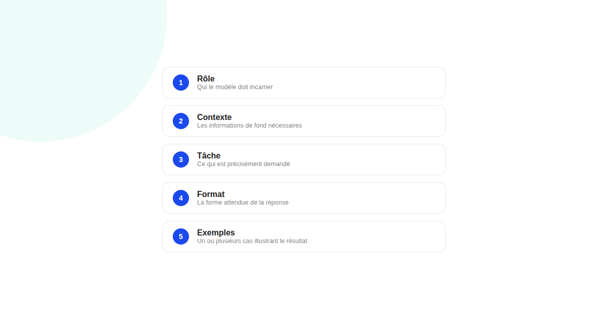
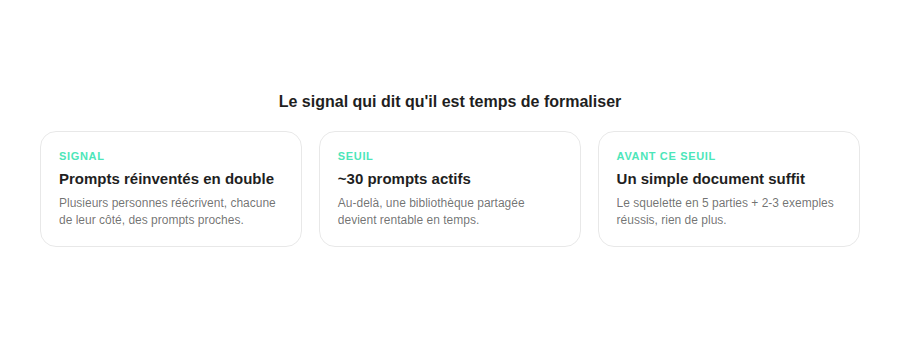

Prompt engineering pour le marketing : compétence de base ou effet de mode ?
Le terme fait parfois sourire, entre « ingénierie » et un simple champ de texte. Mais écrire un prompt qui produit un résultat utilisable du premier coup, de façon répétable à l'échelle d'une équipe, n'a rien d'instinctif — et c'est précisément ce qui en fait une vraie compétence, pas un gadget.

Plusieurs voix du secteur présentent désormais le prompt engineering comme une littératie de base pour 2026, au même rang que savoir lire un bilan financier. L'affirmation peut sembler excessive, mais elle pointe un vrai changement : la différence entre un prompt improvisé et un prompt structuré n'est plus marginale quand une équipe entière s'en sert au quotidien pour produire du contenu, des analyses ou des briefs.
La structure en 5 parties qui revient dans la plupart des guides
Au-delà des « trucs et astuces » qui ont dominé les débuts du prompt engineering, une structure simple s'impose comme base commune : rôle (qui le modèle doit incarner), contexte (les informations de fond nécessaires), tâche (ce qui est précisément demandé), format (la forme attendue de la réponse) et exemples (un ou plusieurs cas illustrant le résultat souhaité). Ce squelette ne garantit pas un résultat parfait, mais il élimine la majorité des réponses à côté du besoin.
Le glissement vers le « context engineering »
Plusieurs formations spécialisées décrivent un glissement récent : au-delà du prompt isolé, la discipline s'étend au « context engineering » — la façon de structurer l'historique de conversation, les données fournies et les contraintes business pour que le modèle comprenne mieux l'intention réelle derrière une demande, pas seulement sa formulation littérale. Un même prompt peut produire des résultats très différents selon le contexte qui l'entoure.

Le repère pour savoir s'il faut formaliser une bibliothèque de prompts
Un guide spécialisé dans le recrutement de profils marketing décrit un rôle hybride de « content engineer », mêlant écriture et discipline d'ingénierie, et situe à une trentaine de prompts actifs le seuil au-delà duquel une bibliothèque partagée devient utile pour une équipe. En deçà de ce volume, documenter et maintenir une bibliothèque coûte probablement plus de temps qu'elle n'en fait gagner — mieux vaut qu'un ou deux membres de l'équipe capitalisent individuellement sur leurs meilleurs prompts avant de formaliser quoi que ce soit.
Le test simple pour savoir si votre équipe en a besoin
Si plusieurs personnes de l'équipe réécrivent, chacune de leur côté, des prompts proches pour des tâches similaires (brief de contenu, synthèse de reporting, déclinaison créative), c'est le signal le plus fiable qu'une structure partagée — même minimale, un simple document avec le squelette en 5 parties et deux ou trois exemples réussis — ferait gagner du temps immédiatement, sans attendre d'atteindre un volume important.
FAQ
Le prompt engineering va-t-il devenir un métier à part dans le marketing ?
Plutôt une compétence transversale intégrée aux métiers existants qu'un poste séparé pour la plupart des équipes. Certains guides évoquent un rôle hybride de « content engineer » qui mélange écriture et discipline d'ingénierie, mais surtout pour des organisations qui gèrent un très grand volume de contenu généré.
Faut-il créer une bibliothèque de prompts partagée dans son équipe ?
Ça devient utile à partir d'un certain volume : un repère cité dans le secteur situe le seuil autour d'une trentaine de prompts actifs utilisés régulièrement par l'équipe. Avant ce seuil, le gain d'une bibliothèque formalisée est souvent inférieur au temps nécessaire pour la maintenir.
Qu'est-ce que le "context engineering" dont on parle de plus en plus ?
C'est le prolongement du prompt engineering classique : plutôt que de chercher la formulation magique d'une seule instruction, on structure l'historique de conversation, les données fournies et les contraintes business pour que le modèle comprenne mieux l'intention réelle derrière la demande.
Envie de structurer l'usage de l'IA dans votre équipe marketing ?
Pour aller plus loin, voir l'article Claude et ChatGPT en growth marketing, et Pourquoi vos prompts marketing ne donnent rien de bon.
Pour continuer sur ce sujet.